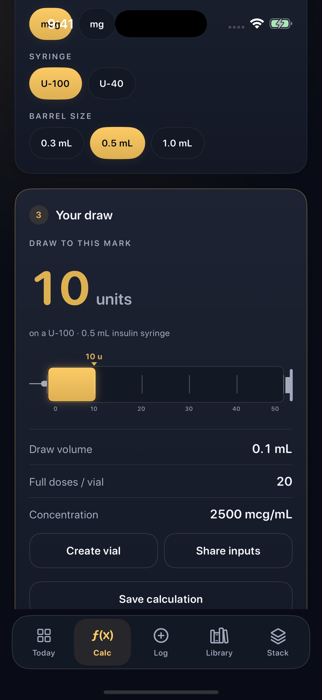
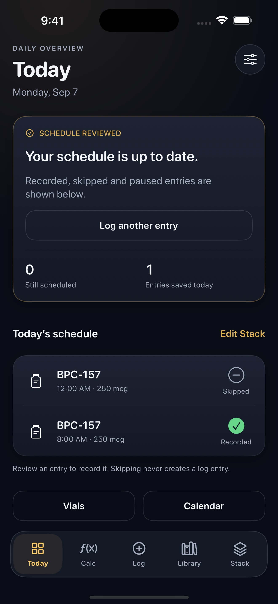
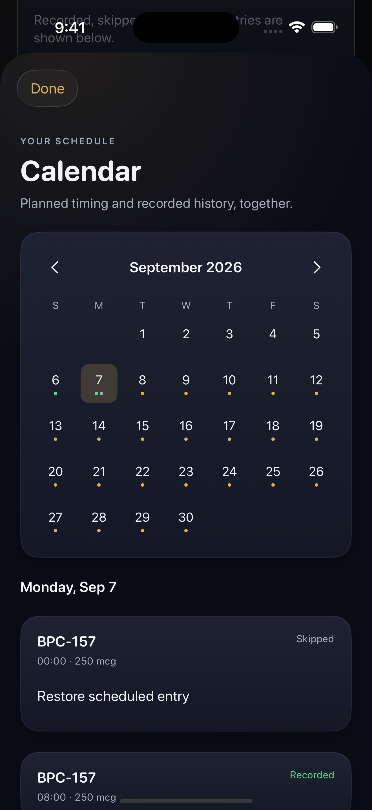

Calculate and save
Powder, pre-mixed and blend modes. Review concentration, draw volume and U-100 or U-40 markings. Save a calculation or use it to create a vial.
For iPhone · Free to download
Enter your vial, water and amount. See the calculated syringe markings, save the result and keep your vial balance and personal log in one place.

Powder, pre-mixed and blend modes. Review concentration, draw volume and U-100 or U-40 markings. Save a calculation or use it to create a vial.
Link log entries to a vial to update its estimated balance. Correct spills or discarded amounts without adding an injection record.
Set your own weekdays and dates. See scheduled, recorded and skipped entries in Today and Calendar, plus your next entry in a widget.
Records stay on your device unless you choose backup or sharing. Import history, share calculation inputs and export your records for free.
Beyond the calculation
Your own schedule and saved history, side by side. Review each entry before you save it.


Start with the free tools
Free includes the calculator, saved calculations, core logging, one active vial, two Stack items, weekday schedules, the area map and a basic next-entry widget. Calculation sharing, history import and data export are also free.
Use the free calculator in your browser →For adults 18+. A math utility and personal journal. PeptideBro performs arithmetic on values you enter; it does not recommend amounts, prescribe schedules or assess treatment outcomes. Area colors reflect elapsed log timing, not a clinical assessment of healing or safety. Many referenced compounds are not approved for human use. Verify inputs and health-related decisions with a licensed clinician.
Get PeptideBro for your iPhone.
Download on the App Store